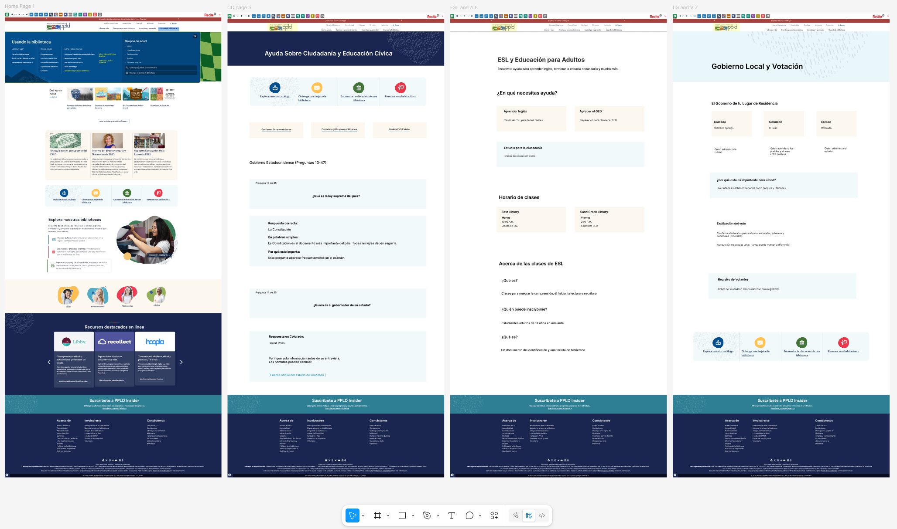
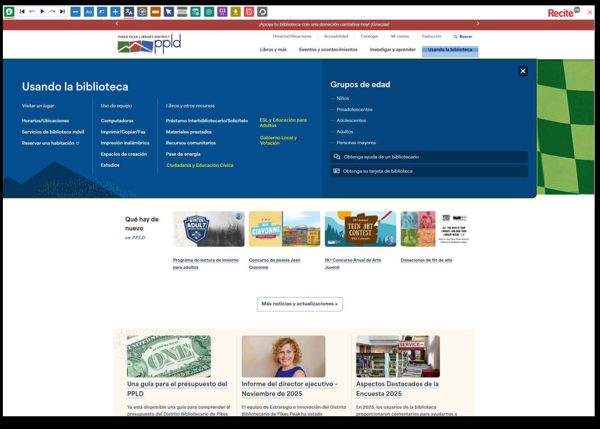
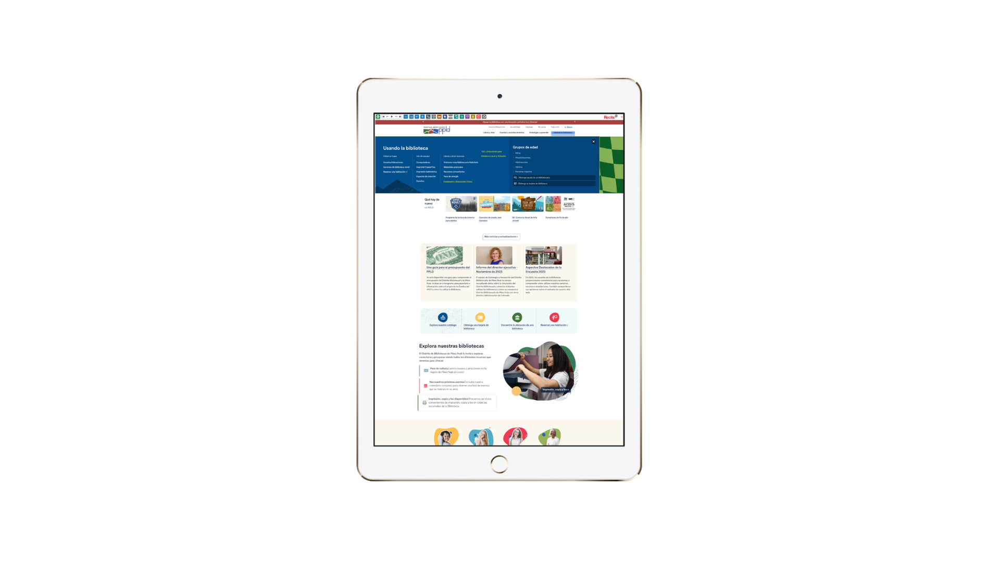
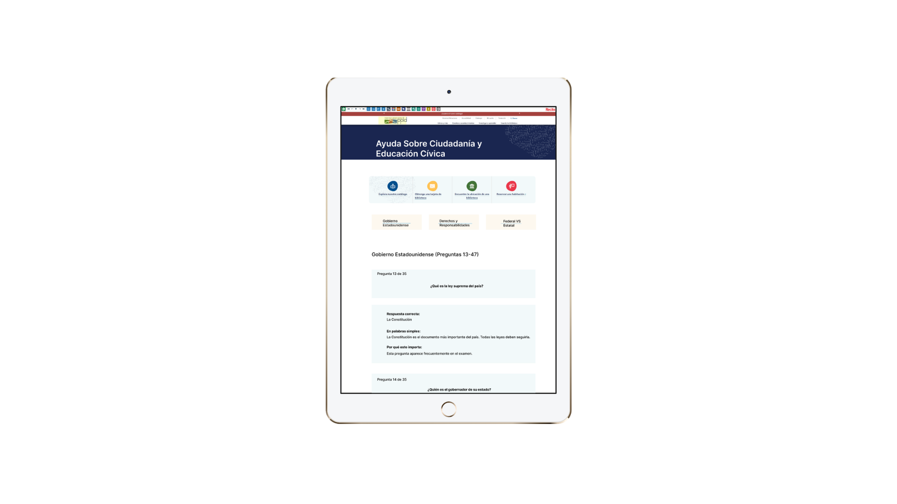
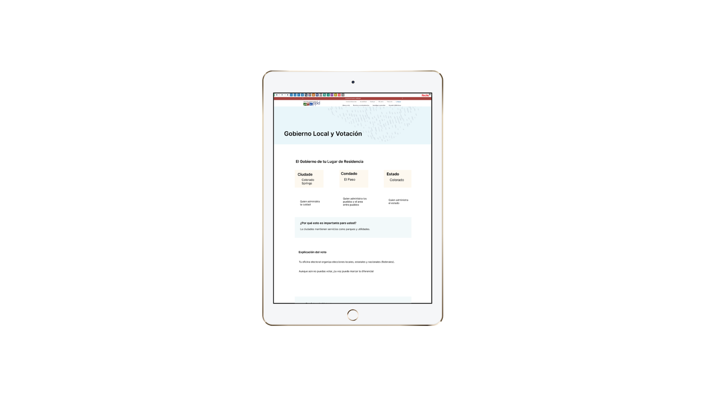
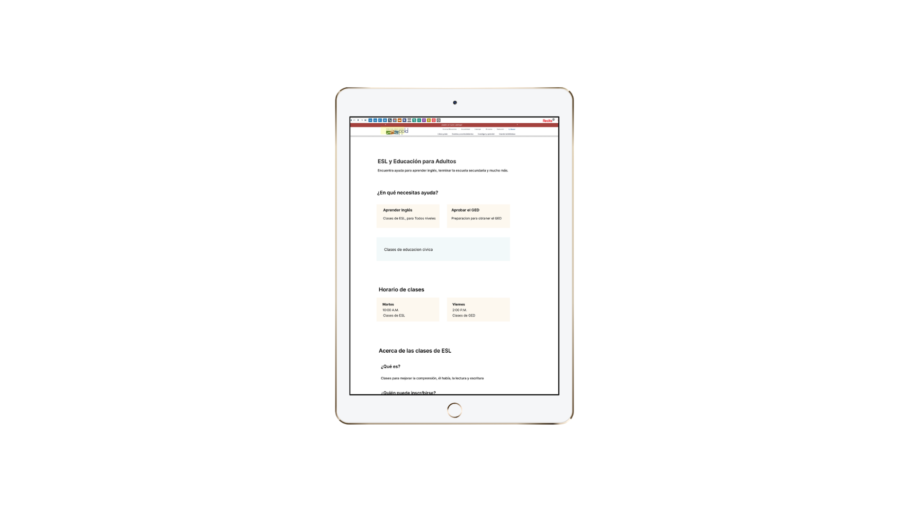
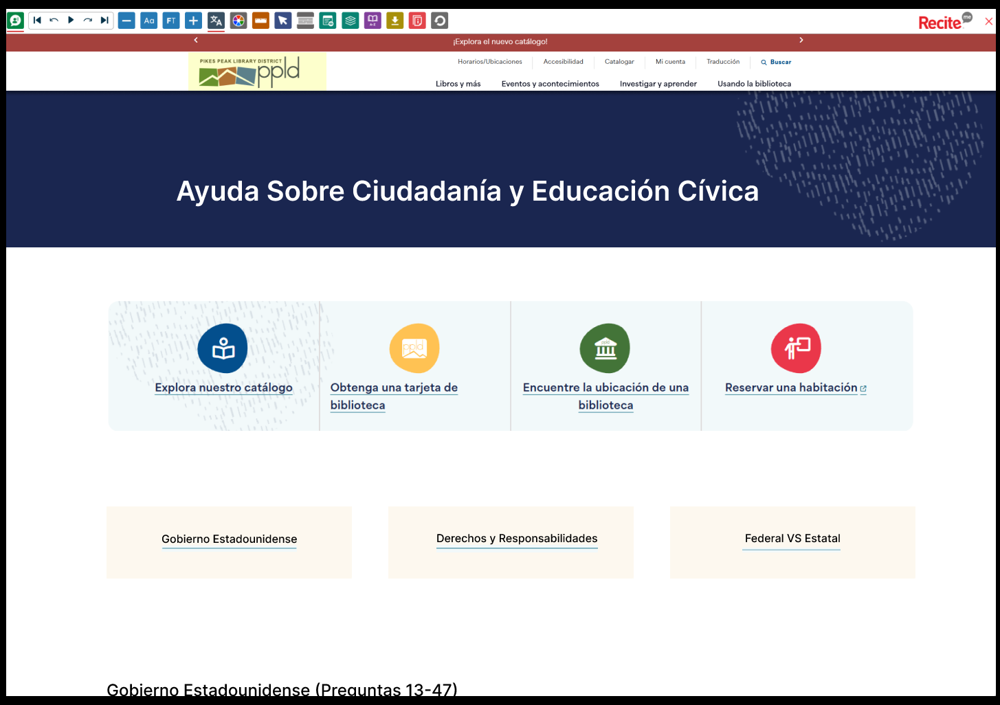

UX Strategy & Information Architecture
Pikes Peak Library District Website Redesign
IA and content strategy for a large public library system website, unifying 12 branch locations under a coherent, accessible digital experience.
Responsibilities
Site Audit Analysis
Analyzed past site audit reports to identify navigation issues, content inconsistencies, accessibility gaps, and opportunities for stronger information architecture.
Unified Navigation
Designed a unified navigation architecture that helped organize library services, branch information, digital resources, and localized content into clearer pathways.
Content Templates
Developed content templates and standards to support reusable page structures, consistent labeling, and easier long-term maintenance for library staff.
Accessibility Documentation
Created accessibility requirements documentation focused on readable headings, clear hierarchy, WCAG 2.1 AA alignment, and accessible interaction patterns.
Localization Support
Outlined localized content needs for Spanish-speaking patrons using library resources for citizenship, civics, GED, and community learning support.
User-Centered Structure
Connected user needs, branch services, language access, and public information into a more structured digital experience.

Overview
Unifying a large public library website into one clearer digital experience
Pikes Peak Library District operates 12 branch locations and serves a diverse community across El Paso County, Colorado. The digital translation of the platform needed to make information culturally and contextually relevant to a local community.
This project unified the digital presence under a single, coherent information architecture that supported branch discovery, digital resources, and localized community needs.
Service Value
Making library resources easier to find, translate, and maintain
The redesigned library experience connects branch information, digital resources, localized materials, and public learning support into one clearer structure. The value of the redesign comes from helping patrons find relevant services faster while giving staff a more reusable and maintainable content system.
Branch locations supported through a unified website structure and reusable page framework.
Accessibility-focused requirements aligned with WCAG 2.1 AA goals for public-facing content.
Coherent information architecture designed to support casual visitors and frequent library users.

Problem & Goals
Supporting Spanish-speaking patrons with clearer access to learning resources
The main objective was to create a mockup of the website, navigating resources for Spanish-speaking patrons studying for the naturalization exam or civics GED.
The goal was to create one unified IA that served both casual visitors and frequent library users, reduced content maintenance burden for staff, and met WCAG 2.1 AA standards.
Language Access
Spanish-speaking patrons needed clearer access to digital resources, translated materials, and learning support without navigating unrelated content.
Maintenance Burden
Staff needed reusable structures that reduced duplicated content and made updates easier across branch and resource pages.
User Scenario
Arrive at the Library Site
The user enters the website looking for Spanish-language resources, branch information, or support for citizenship and civics learning.
Browse Services
The user scans the organized navigation and chooses a clear path under library services, resources, or location-based information.
Find Learning Materials
The user locates naturalization, civics, GED, or digital learning resources without needing to sort through unrelated pages.
Review Localized Content
The user reads translated or culturally relevant content presented with clearer headings, labels, and page structure.
Return to a Branch Page
The user can revisit a standardized branch page to find local services, hours, and editable location-specific information.

My Role
Designing content structure, localization pathways, and accessibility requirements
I created a content plan and outlined pages of materials providing localization. My deliverables included the content audit, new site map, content templates, and the accessibility requirements specification.
Lucía Ramirez
New immigrant and library patron
Lucía is studying for the citizenship test and needs an easy way to find Spanish-language resources, civics support, and trusted public library materials.
Goals
- Find naturalization resources quickly
- Access Spanish-language support
- Use trusted community learning materials
Mateo Collins
High school civics student
Mateo is completing a civics project and needs a simple way to locate public resources, library materials, and structured information he can understand.
Goals
- Locate civics learning materials
- Understand resource categories
- Move between pages without confusion

Discovery & Constraints
Working within existing branding, tone, typography, and templates
Discovery included analyzing the Pikes Peak Library District website's branding, color scheme, typography, tone of voice, and information architecture.
The primary constraint was working the pages within its templating system while still improving clarity, hierarchy, and accessibility.
Brand Alignment
The redesign needed to respect existing colors, typography, tone, and public library identity.
Template Limits
Page improvements needed to work within the existing content structure and templating system.
Accessibility Needs
Headings, labels, contrast, and page hierarchy needed to support accessible public information.
Key Features
Unified Navigation for Library Services
The redesigned navigation consolidated important pages into clearer hover menu pathways, helping patrons move through services, resources, branches, and learning materials with fewer decisions.
Localized Content for Spanish-Speaking Patrons
Content pathways were designed around patrons who needed Spanish-language support, citizenship resources, civics GED materials, and culturally relevant information.
Reusable Branch and Resource Templates
Branch pages were standardized using a single template with locally editable zones, making the site easier for staff to update while keeping the user experience consistent.

Information Architecture
Consolidating pages into clearer pathways for services and resources
The new site map consolidated the pages to the hover menu, using the library's services and resources. Each option created a simple and structured page with the information clearly labeled.
Branch pages were standardized using a single template with locally editable zones so the experience could remain consistent while still supporting local branch updates.
Content Structure
The IA focused on predictable page paths, reusable content zones, and clearer resource categories for both new and returning library users.

User Flows, Wireframes & Prototypes
Designing pathways for different digital literacy levels and accessibility needs
Key flows were designed around personas who might use the resources differently. For example, a new immigrant might be studying for the citizenship test, while another user might be a high school student working on a civics project.
Wireframes covered page templates from the homepage through event detail and digital resource landing pages. Prototypes were user tested with personas representing different digital literacy levels and accessibility needs.
Quick access to localized citizenship and civics resources.
Clearer paths from homepage navigation to resource landing pages.
Reusable page structures tested through prototype flows.
Prototype Walkthrough
Interactive Figma prototype review
The prototype walkthrough demonstrates the redesigned page structure, localized content pathways, resource navigation, and accessibility-centered layout decisions for the Pikes Peak Library District website redesign.

Outcomes & Next Steps
Reducing navigation items and improving access to localized digital resources
The new architecture reduced navigation items within reusable templates. A significant reduction in time required for user tasks was supported through direct translation for digital resources and clearer content pathways.
Refine Spanish-language resource pages and validate translation clarity with users.
Expand accessibility testing across page templates, menus, and interactive components.
Continue improving branch templates and localized content maintenance workflows.
Next Steps
Next steps include expanding the localized content strategy, validating Spanish-language resource pathways, and continuing accessibility testing across page templates.
Future iterations would include stronger onboarding for resource discovery, additional user testing with Spanish-speaking patrons, and more detailed content governance documentation for staff updates.
Learnings
This project strengthened my ability to design information architecture for public-sector and community-centered digital experiences.
I also learned how important localization, plain language, content templates, and accessibility requirements are when designing for diverse public library users.